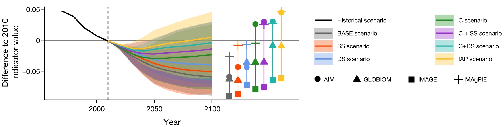

Research
My scientific research broadly focusses on the nexus of land use, food production, biodiversity indicators and conservation planning. Specifically, I am very much interested in
- how we can bring the best-available biodiversity data into decision making processes and under which circumstances win-win situations arise.
- the influence of temporal lags in our understanding of biodiversity change and effectiveness of conservation interventions.
- providing scientists and practitioners with robust environmental datasets and accurate biodiversity indicators.
- the creation of spatial and temporal scenarios and predictions of what-if assumptions and plausible future for humankind and wildlife on this planet.
I enjoy thinking about and implementing novel approaches to better quantify the natural and anthropic world. Here I regularly use and combine remote-sensing, ecological statistics and machine learning techniques.
You can find a full list of my scientific contributions here and key people I often collaborate with at the bottom.
Improving biodiversity indicators
Difference in local biodiversity after a land change. Figure from Jung et. al. (2019)
To inform policy makers and practioners about the state of biodiversity, we need robust information on whether certain interventions and changes in behaviour might result in measurable differences in biodiversity outcomes. I regularly work with large global and national biodiversity databases and models and contribute towards making biodiversity indicators more robust and replicable. In particular I have investigated how we if and how we can establish linkages between local biodiversity change and remote sensing data, thus enabling cost-effective monitoring.
Keywords: biotic-lag | remote sensing | indicators | model-based integration
Selected manuscripts:
Jung, M. (2023). An Integrated Species Distribution Modelling Framework for Heterogeneous Biodiversity Data. Ecological Informatics 76: 102127. https://doi.org/10.1016/j.ecoinf.2023.102127
Jung, M. (2022) Predictability and Transferability of Local Biodiversity Environment Relationships’. PeerJ 10: e13872. https://doi.org/10.7717/peerj.13872.
Jung, M., Scharlemann, J. P. W., & Rowhani, P. (2020). Landscape-wide changes in land use and land cover correlate with, but rarely explain local biodiversity change. Landscape Ecology, 35(10), 2255–2273. https://doi.org/10.1007/s10980-020-01109-2
Jung, M., Rowhani, P., & Scharlemann, J. P. W. (2019). Impacts of past abrupt land change on local biodiversity globally. Nature Communications, 10(1), 5474. https://doi.org/10.1038/s41467-019-13452-3
Jung, M., Rowhani, P., Newbold, T., Bentley, L., Purvis, A., & Scharlemann, J. P. W. (2019). Local species assemblages are influenced more by past than current dissimilarities in photosynthetic activity. Ecography, 42(4), 670–682. https://doi.org/10.1111/ecog.04031
Integrated conservation and land-use planning
Global joint priorities for conserving biodiversity, carbon and water assets. Figure from Jung et. al. (2021)
Funding for biodiversity is often limited and management for conservation or restoration has to be implemented in a way that is cost efficient and ideally beneficial to multiple assets, e.g. biodiversity as well as ecosystem services. I have used linear programming and optimization tools to derive delineations of global areas of importance for biodiversity and ecosystem services. I am expanding this work through ongoing projects, particular on onsidering further synergies and tradeoffs with Nature Constributions to People, integrating stakeholder preferences, and current and future land-use and climatic constrains.
Keywords: conservation-planning | joint-optimization | spatial prioritization | integer programming
Selected manuscripts:
Jung, M., André Alagador, D., Chapman, M., Hermoso, V., Kujala, H., O’Connor, L., Schinegger, R., Verburg, P.H. and Visconti. P. (2023) An Assessment of the State of Conservation Planning in Europe. Preprint. Open Science Framework, https://doi.org/10.31219/osf.io/8x2ug.
Jung, M, Arnell, A., de Lamo, X., García-Rangel, S., Lewis, M., Mark, J., Merow, C., et al. (2021) Areas of Global Importance for Conserving Terrestrial Biodiversity, Carbon and Water. Nature Ecology & Evolution 5, no. 11: 1499–1509. https://doi.org/10.1038/s41559-021-01528-7.
Fastre, C., Mogg, S., Jung, M., & Visconti, P. (2019). Targeted expansion of Protected Areas to maximise the persistence of terrestrial mammals. BioRxiv, 3124, 1–19. https://doi.org/10.1101/608992v2
Mapping of land systems and ecosystems
A global map of terrestrial and marine habitat types. Figure from Jung et. al. (2020)
To make adequate decisions and quantify the influence of environmental change on biodiversity and ecosystem services requires the best-available biophysical and socio-economic data. In various research projects I have led or been involved in creating new global and national datasets for the scientific community. Usually these data are created by either intersecting and harmonizing existing datasets or by applying innovative machine learning algorithms on remote-sensing imagery and climate variables. You can find some of the datasets that I created in the Data section.
Keywords: Forest | habitats | ecosystems | remote-sensing | food production systems | fragmentation
Selected manuscripts:
Jung, M., Dahal, P. R., Butchart, S. H. M., Donald, P. F., De Lamo, X., Lesiv, M., … Visconti, P. (2020). A global map of terrestrial habitat types. Scientific Data, 7(1), 256. https://doi.org/10.1038/s41597-020-00599-8
Hengl, T, Jung, M., & Visconti, P. (2020). Potential distribution of land cover classes (Potential Natural Vegetation) at 250 m spatial resolution (Version v0.1) [Data set]. Zenodo. http://doi.org/10.5281/zenodo.3631254
Scenarios and predictions
 Plausible scenarios of bending the curve of biodiversity loss while maintaining sufficient food provision. Figure from Leclère et. al. (2020)
As scientists we should highlight pathways towards improving the current state of the environment and, to make scientific advise useful, provide guidance on the future impact of political decisions and actions undertaken today. In terms of scientific policy-advise this equates to the creation of (spatial-explicit) scenarios that highlight the impacts, leakage effects and opportunities of actions that can be undertaken. Working at IIASA I have become increasingly interested and involved in the creation of biodiversity-relevant scenarios for policy advise using integrated assessment models (IAMs), teaming up with land-use modellers and economists.
Keywords: scenarios | bending-the-curve | planetary boundaries | half-earth | integrated-assessment
Selected manuscripts:
Henry, R.C., Arneth, A., Jung, M. et al. Global and regional health and food security under strict conservation scenarios. (2022) Nature Sustainability. https://doi.org/10.1038/s41893-021-00844-x
Leclère, D., Obersteiner, M., Barrett, M., Butchart, S. H. M., Chaudhary, A., De Palma, A., […], Jung, M., […] Young, L. (2020). Bending the curve of terrestrial biodiversity needs an integrated strategy. Nature. https://doi.org/10.1038/s41586-020-2705-y
Newbold, T., Hudson, L. N., Arnell, A. P., Contu, S., De Palma, A., Ferrier, S., […], Jung, M., […] Purvis, A. (2016). Has land use pushed terrestrial biodiversity beyond the planetary boundary? A global assessment. Science, 353(6296), 288–291. https://doi.org/10.1126/science.aaf2201
Ongoing and past Collaborations
- Piero Visconti (International Institute for Applied Systems Analysis, Austria)
- David Leclere (International Institute for Applied Systems Analysis, Austria)
- Michael Obersteiner (Oxford University, UK)
- Neil Burgess (UNEP-WCMC, UK)
- Samantha Hill (UNEP-WCMC, UK)
- Andy Purvis (Natural History Museum London, UK)
- Tim Newbold (Centre for Biodiversity and Environment Research, University College London, UK)
- Myroslava Lesiv (International Institute for Applied Systems Analysis, Austria)
- Steffen Fritz (International Institute for Applied Systems Analysis, Austria)
- Luca Santini (Sapienza University of Rome, Italy)
- Jeffrey Hanson (University of Carleton, Canada)
- Jörn Scharlemann (University of Sussex, UK)
- Pedram Rowhani (University of Sussex, UK)